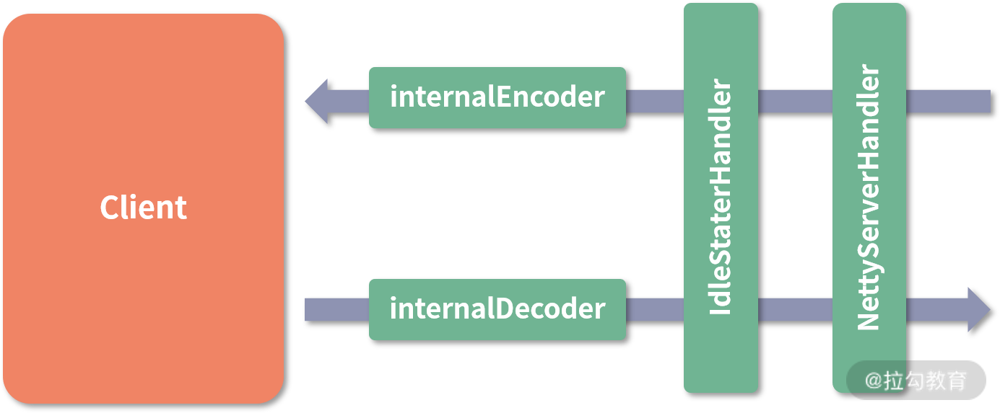
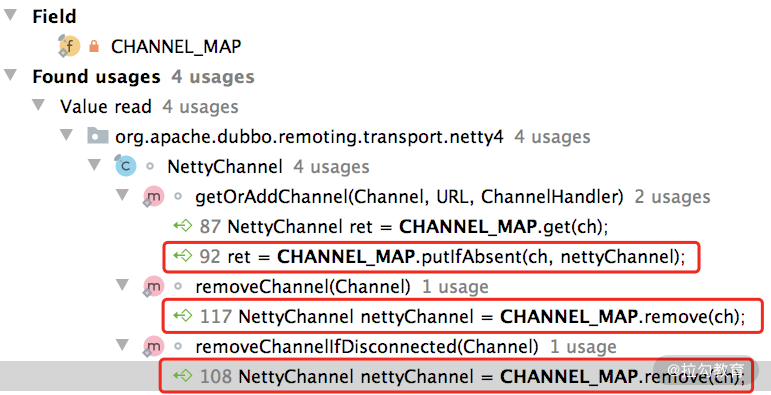
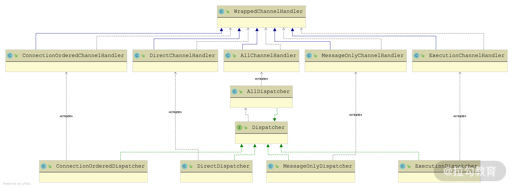
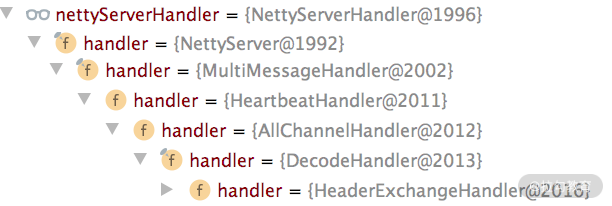

- 00 开篇词 深入掌握 Dubbo 原理与实现，提升你的职场竞争力.md.html
- 01 Dubbo 源码环境搭建：千里之行，始于足下.md.html
- 02 Dubbo 的配置总线：抓住 URL，就理解了半个 Dubbo.md.html
- 03 Dubbo SPI 精析，接口实现两极反转（上）.md.html
- 04 Dubbo SPI 精析，接口实现两极反转（下）.md.html
- 05 海量定时任务，一个时间轮搞定.md.html
- 06 ZooKeeper 与 Curator，求你别用 ZkClient 了（上）.md.html
- 07 ZooKeeper 与 Curator，求你别用 ZkClient 了（下）.md.html
- 08 代理模式与常见实现.md.html
- 09 Netty 入门，用它做网络编程都说好（上）.md.html
- 10 Netty 入门，用它做网络编程都说好（下）.md.html
- 11 简易版 RPC 框架实现（上）.md.html
- 12 简易版 RPC 框架实现（下）.md.html
- 13 本地缓存：降低 ZooKeeper 压力的一个常用手段.md.html
- 14 重试机制是网络操作的基本保证.md.html
- 15 ZooKeeper 注册中心实现，官方推荐注册中心实践.md.html
- 16 Dubbo Serialize 层：多种序列化算法，总有一款适合你.md.html
- 17 Dubbo Remoting 层核心接口分析：这居然是一套兼容所有 NIO 框架的设计？.md.html
- 18 Buffer 缓冲区：我们不生产数据，我们只是数据的搬运工.md.html
- 19 Transporter 层核心实现：编解码与线程模型一文打尽（上）.md.html
- 20 Transporter 层核心实现：编解码与线程模型一文打尽（下）.md.html
- 21 Exchange 层剖析：彻底搞懂 Request-Response 模型（上）.md.html
- 22 Exchange 层剖析：彻底搞懂 Request-Response 模型（下）.md.html
- 23 核心接口介绍，RPC 层骨架梳理.md.html
- 24 从 Protocol 起手，看服务暴露和服务引用的全流程（上）.md.html
- 25 从 Protocol 起手，看服务暴露和服务引用的全流程（下）.md.html
- 26 加餐：直击 Dubbo “心脏”，带你一起探秘 Invoker（上）.md.html
- 27 加餐：直击 Dubbo “心脏”，带你一起探秘 Invoker（下）.md.html
- 28 复杂问题简单化，代理帮你隐藏了多少底层细节？.md.html
- 29 加餐：HTTP 协议 + JSON-RPC，Dubbo 跨语言就是如此简单.md.html
- 30 Filter 接口，扩展 Dubbo 框架的常用手段指北.md.html
- 31 加餐：深潜 Directory 实现，探秘服务目录玄机.md.html
- 32 路由机制：请求到底怎么走，它说了算（上）.md.html
- 33 路由机制：请求到底怎么走，它说了算（下）.md.html
- 34 加餐：初探 Dubbo 动态配置的那些事儿.md.html
- 35 负载均衡：公平公正物尽其用的负载均衡策略，这里都有（上）.md.html
- 36 负载均衡：公平公正物尽其用的负载均衡策略，这里都有（下）.md.html
- 37 集群容错：一个好汉三个帮（上）.md.html
- 38 集群容错：一个好汉三个帮（下）.md.html
- 39 加餐：多个返回值不用怕，Merger 合并器来帮忙.md.html
- 40 加餐：模拟远程调用，Mock 机制帮你搞定.md.html
- 41 加餐：一键通关服务发布全流程.md.html
- 42 加餐：服务引用流程全解析.md.html
- 43 服务自省设计方案：新版本新方案.md.html
- 44 元数据方案深度剖析，如何避免注册中心数据量膨胀？.md.html
- 45 加餐：深入服务自省方案中的服务发布订阅（上）.md.html
- 46 加餐：深入服务自省方案中的服务发布订阅（下）.md.html
- 47 配置中心设计与实现：集中化配置 and 本地化配置，我都要（上）.md.html
- 48 配置中心设计与实现：集中化配置 and 本地化配置，我都要（下）.md.html
- 49 结束语 认真学习，缩小差距.md.html
- 捐赠
20 Transporter 层核心实现：编解码与线程模型一文打尽（下）
在上一课时中，我们深入分析了 Transporter 层中 Server 相关的核心抽象类以及基于 Netty 4 的实现类。本课时我们继续分析 Transporter 层中剩余的核心接口实现，主要涉及 Client 接口、Channel 接口、ChannelHandler 接口，以及相关的关键组件。
Client 继承路线分析
在上一课时分析 AbstractEndpoint 的时候可以看到，除了 AbstractServer 这一条继承线之外，还有 AbstractClient 这条继承线，它是对客户端的抽象。AbstractClient 中的核心字段有如下几个。
- connectLock（Lock 类型）：在 Client 底层进行连接、断开、重连等操作时，需要获取该锁进行同步。
- needReconnect（Boolean 类型）：在发送数据之前，会检查 Client 底层的连接是否断开，如果断开了，则会根据 needReconnect 字段，决定是否重连。
- executor（ExecutorService 类型）：当前 Client 关联的线程池，线程池的具体内容在上一课时已经详细介绍过了，这里不再赘述。
在 AbstractClient 的构造方法中，会解析 URL 初始化 needReconnect 字段和 executor字段，如下示例代码：
public AbstractClient(URL url, ChannelHandler handler) throws RemotingException {
super(url, handler); // 调用父类的构造方法
// 解析URL，初始化needReconnect值
needReconnect = url.getParameter("send.reconnect", false);
initExecutor(url); // 解析URL，初始化executor
doOpen(); // 初始化底层的NIO库的相关组件
// 创建底层连接
connect(); // 省略异常处理的逻辑
}
与 AbstractServer 类似，AbstractClient 定义了 doOpen()、doClose()、doConnect()和doDisConnect() 四个抽象方法给子类实现。
下面来看基于 Netty 4 实现的 NettyClient，它继承了 AbstractClient 抽象类，实现了上述四个 do*() 抽象方法，我们这里重点关注 doOpen() 方法和 doConnect() 方法。在 NettyClient 的 doOpen() 方法中会通过 Bootstrap 构建客户端，其中会完成连接超时时间、keepalive 等参数的设置，以及 ChannelHandler 的创建和注册，具体实现如下所示：
protected void doOpen() throws Throwable {
// 创建NettyClientHandler
final NettyClientHandler nettyClientHandler = new NettyClientHandler(getUrl(), this);
bootstrap = new Bootstrap(); // 创建Bootstrap
bootstrap.group(NIO_EVENT_LOOP_GROUP)
.option(ChannelOption.SO_KEEPALIVE, true)
.option(ChannelOption.TCP_NODELAY, true)
.option(ChannelOption.ALLOCATOR, PooledByteBufAllocator.DEFAULT)
.channel(socketChannelClass());
// 设置连接超时时间，这里使用到AbstractEndpoint中的connectTimeout字段
bootstrap.option(ChannelOption.CONNECT_TIMEOUT_MILLIS, Math.max(3000, getConnectTimeout()));
bootstrap.handler(new ChannelInitializer<SocketChannel>() {
protected void initChannel(SocketChannel ch) throws Exception {
// 心跳请求的时间间隔
int heartbeatInterval = UrlUtils.getHeartbeat(getUrl());
// 通过NettyCodecAdapter创建Netty中的编解码器，这里不再重复介绍
NettyCodecAdapter adapter = new NettyCodecAdapter(getCodec(), getUrl(), NettyClient.this);
// 注册ChannelHandler
ch.pipeline().addLast("decoder", adapter.getDecoder())
.addLast("encoder", adapter.getEncoder())
.addLast("client-idle-handler", new IdleStateHandler(heartbeatInterval, 0, 0, MILLISECONDS))
.addLast("handler", nettyClientHandler);
// 如果需要Socks5Proxy，需要添加Socks5ProxyHandler(略)
}
});
}
得到的 NettyClient 结构如下图所示：

NettyClient 结构图
NettyClientHandler 的实现方法与上一课时介绍的 NettyServerHandler 类似，同样是实现了 Netty 中的 ChannelDuplexHandler，其中会将所有方法委托给 NettyClient 关联的 ChannelHandler 对象进行处理。两者在 userEventTriggered() 方法的实现上有所不同，NettyServerHandler 在收到 IdleStateEvent 事件时会断开连接，而 NettyClientHandler 则会发送心跳消息，具体实现如下：
public void userEventTriggered(ChannelHandlerContext ctx, Object evt) throws Exception {
if (evt instanceof IdleStateEvent) {
NettyChannel channel = NettyChannel.getOrAddChannel(ctx.channel(), url, handler);
Request req = new Request();
req.setVersion(Version.getProtocolVersion());
req.setTwoWay(true);
req.setEvent(HEARTBEAT_EVENT); // 发送心跳请求
channel.send(req);
} else {
super.userEventTriggered(ctx, evt);
}
}
Channel 继承线分析
除了上一课时介绍的 AbstractEndpoint 之外，AbstractChannel 也继承了 AbstractPeer 这个抽象类，同时还继承了 Channel 接口。AbstractChannel 实现非常简单，只是在 send() 方法中检测了底层连接的状态，没有实现具体的发送消息的逻辑。
这里我们依然以基于 Netty 4 的实现—— NettyChannel 为例，分析它对 AbstractChannel 的实现。NettyChannel 中的核心字段有如下几个。
- channel（Channel类型）：Netty 框架中的 Channel，与当前的 Dubbo Channel 对象一一对应。
- attributes（Map
- active（AtomicBoolean）：用于标识当前 Channel 是否可用。
另外，在 NettyChannel 中还有一个静态的 Map 集合（CHANNEL_MAP 字段），用来缓存当前 JVM 中 Netty 框架 Channel 与 Dubbo Channel 之间的映射关系。从下图的调用关系中可以看到，NettyChannel 提供了读写 CHANNEL_MAP 集合的方法：

NettyChannel 中还有一个要介绍的是 send() 方法，它会通过底层关联的 Netty 框架 Channel，将数据发送到对端。其中，可以通过第二个参数指定是否等待发送操作结束，具体实现如下：
public void send(Object message, boolean sent) throws RemotingException {
// 调用AbstractChannel的send()方法检测连接是否可用
super.send(message, sent);
boolean success = true;
int timeout = 0;
// 依赖Netty框架的Channel发送数据
ChannelFuture future = channel.writeAndFlush(message);
if (sent) { // 等待发送结束，有超时时间
timeout = getUrl().getPositiveParameter(TIMEOUT_KEY, DEFAULT_TIMEOUT);
success = future.await(timeout);
}
Throwable cause = future.cause();
if (cause != null) {
throw cause;
}
// 出现异常会调用removeChannelIfDisconnected()方法，在底层连接断开时，
// 会清理CHANNEL_MAP缓存(略)
}
ChannelHandler 继承线分析
前文介绍的 AbstractServer、AbstractClient 以及 Channel 实现，都是通过 AbstractPeer 实现了 ChannelHandler 接口，但只是做了一层简单的委托（也可以说成是装饰器），将全部方法委托给了其底层关联的 ChannelHandler 对象。
这里我们就深入分析 ChannelHandler 的其他实现类，涉及的实现类如下所示：

ChannelHandler 继承关系图
其中ChannelHandlerDispatcher在[第 17 课时]已经介绍过了，它负责将多个 ChannelHandler 对象聚合成一个 ChannelHandler 对象。
ChannelHandlerAdapter是 ChannelHandler 的一个空实现，TelnetHandlerAdapter 继承了它并实现了 TelnetHandler 接口。至于Dubbo 对 Telnet 的支持，我们会在后面的课时中单独介绍，这里就先不展开分析了。
从名字上看，ChannelHandlerDelegate接口是对另一个 ChannelHandler 对象的封装，它的两个实现类 AbstractChannelHandlerDelegate 和 WrappedChannelHandler 中也仅仅是封装了另一个 ChannelHandler 对象。
其中，AbstractChannelHandlerDelegate有三个实现类，都比较简单，我们来逐个讲解。
- MultiMessageHandler：专门处理 MultiMessage 的 ChannelHandler 实现。MultiMessage 是 Exchange 层的一种消息类型，它其中封装了多个消息。在 MultiMessageHandler 收到 MultiMessage 消息的时候，received() 方法会遍历其中的所有消息，并交给底层的 ChannelHandler 对象进行处理。
- DecodeHandler：专门处理 Decodeable 的 ChannelHandler 实现。实现了 Decodeable 接口的类都会提供了一个 decode() 方法实现对自身的解码，DecodeHandler.received() 方法就是通过该方法得到解码后的消息，然后传递给底层的 ChannelHandler 对象继续处理。
- HeartbeatHandler：专门处理心跳消息的 ChannelHandler 实现。在 HeartbeatHandler.received() 方法接收心跳请求的时候，会生成相应的心跳响应并返回；在收到心跳响应的时候，会打印相应的日志；在收到其他类型的消息时，会传递给底层的 ChannelHandler 对象进行处理。下面是其核心实现：
public void received(Channel channel, Object message) throws RemotingException {
setReadTimestamp(channel); // 记录最近的读写事件时间戳
if (isHeartbeatRequest(message)) { // 收到心跳请求
Request req = (Request) message;
if (req.isTwoWay()) { // 返回心跳响应，注意，携带请求的ID
Response res = new Response(req.getId(), req.getVersion());
res.setEvent(HEARTBEAT_EVENT);
channel.send(res);
return;
}
if (isHeartbeatResponse(message)) { // 收到心跳响应
// 打印日志(略)
return;
}
handler.received(channel, message);
}
另外，我们可以看到，在 received() 和 send() 方法中，HeartbeatHandler 会将最近一次的读写时间作为附加属性记录到 Channel 中。
通过上述介绍，我们发现 AbstractChannelHandlerDelegate 下的三个实现，其实都是在原有 ChannelHandler 的基础上添加了一些增强功能，这是典型的装饰器模式的应用。
Dispatcher 与 ChannelHandler
接下来，我们介绍 ChannelHandlerDelegate 接口的另一条继承线——WrappedChannelHandler，其子类主要是决定了 Dubbo 以何种线程模型处理收到的事件和消息，就是所谓的“消息派发机制”，与前面介绍的 ThreadPool 有紧密的联系。

WrappedChannelHandler 继承关系图
从上图中我们可以看到，每个 WrappedChannelHandler 实现类的对象都由一个相应的 Dispatcher 实现类创建，下面是 Dispatcher 接口的定义：
@SPI(AllDispatcher.NAME) // 默认扩展名是all
public interface Dispatcher {
// 通过URL中的参数可以指定扩展名，覆盖默认扩展名
@Adaptive({"dispatcher", "dispather", "channel.handler"})
ChannelHandler dispatch(ChannelHandler handler, URL url);
}
AllDispatcher 创建的是 AllChannelHandler 对象，它会将所有网络事件以及消息交给关联的线程池进行处理。AllChannelHandler覆盖了 WrappedChannelHandler 中除了 sent() 方法之外的其他网络事件处理方法，将调用其底层的 ChannelHandler 的逻辑放到关联的线程池中执行。
我们先来看 connect() 方法，其中会将CONNECTED 事件的处理封装成ChannelEventRunnable提交到线程池中执行，具体实现如下：
public void connected(Channel channel) throws RemotingException {
ExecutorService executor = getExecutorService(); // 获取公共线程池
// 将CONNECTED事件的处理封装成ChannelEventRunnable提交到线程池中执行
executor.execute(new ChannelEventRunnable(channel, handler, ChannelState.CONNECTED));
// 省略异常处理的逻辑
}
这里的 getExecutorService() 方法会按照当前端点（Server/Client）的 URL 从 ExecutorRepository 中获取相应的公共线程池。
disconnected()方法处理连接断开事件，caught() 方法处理异常事件，它们也是按照上述方式实现的，这里不再展开赘述。
received() 方法会在当前端点收到数据的时候被调用，具体执行流程是先由 IO 线程（也就是 Netty 中的 EventLoopGroup）从二进制流中解码出请求，然后调用 AllChannelHandler 的 received() 方法，其中会将请求提交给线程池执行，执行完后调用 sent()方法，向对端写回响应结果。received() 方法的具体实现如下：
public void received(Channel channel, Object message) throws RemotingException {
// 获取线程池
ExecutorService executor = getPreferredExecutorService(message);
try {
// 将消息封装成ChannelEventRunnable任务，提交到线程池中执行
executor.execute(new ChannelEventRunnable(channel, handler, ChannelState.RECEIVED, message));
} catch (Throwable t) {
// 如果线程池满了，请求会被拒绝，这里会根据请求配置决定是否返回一个说明性的响应
if(message instanceof Request && t instanceof RejectedExecutionException){
sendFeedback(channel, (Request) message, t);
return;
}
throw new ExecutionException("...");
}
}
getPreferredExecutorService() 方法对响应做了特殊处理：如果请求在发送的时候指定了关联的线程池，在收到对应的响应消息的时候，会优先根据请求的 ID 查找请求关联的线程池处理响应。
public ExecutorService getPreferredExecutorService(Object msg) {
if (msg instanceof Response) {
Response response = (Response) msg;
DefaultFuture responseFuture = DefaultFuture.getFuture(response.getId()); // 获取请求关联的DefaultFuture
if (responseFuture == null) {
return getSharedExecutorService();
} else { // 如果请求关联了线程池，则会获取相关的线程来处理响应
ExecutorService executor = responseFuture.getExecutor();
if (executor == null || executor.isShutdown()) {
executor = getSharedExecutorService();
}
return executor;
}
} else { // 如果是请求消息，则直接使用公共的线程池处理
return getSharedExecutorService();
}
}
这里涉及了 Request 和 Response 的概念，是 Exchange 层的概念，在后面会展开介绍，这里你只需要知道它们是不同的消息类型即可。
注意，AllChannelHandler 并没有覆盖父类的 sent() 方法，也就是说，发送消息是直接在当前线程调用 sent() 方法完成的。
下面我们来看剩余的 WrappedChannelHandler 的实现。ExecutionChannelHandler（由 ExecutionDispatcher 创建）只会将请求消息派发到线程池进行处理，也就是只重写了 received() 方法。对于响应消息以及其他网络事件（例如，连接建立事件、连接断开事件、心跳消息等），ExecutionChannelHandler 会直接在 IO 线程中进行处理。
DirectChannelHandler 实现（由 DirectDispatcher 创建）会在 IO 线程中处理所有的消息和网络事件。
MessageOnlyChannelHandler 实现（由 MessageOnlyDispatcher 创建）会将所有收到的消息提交到线程池处理，其他网络事件则是由 IO 线程直接处理。
ConnectionOrderedChannelHandler 实现（由 ConnectionOrderedDispatcher 创建）会将收到的消息交给线程池进行处理，对于连接建立以及断开事件，会提交到一个独立的线程池并排队进行处理。在 ConnectionOrderedChannelHandler 的构造方法中，会初始化一个线程池，该线程池的队列长度是固定的：
public ConnectionOrderedChannelHandler(ChannelHandler handler, URL url) {
super(handler, url);
String threadName = url.getParameter(THREAD_NAME_KEY, DEFAULT_THREAD_NAME);
// 注意，该线程池只有一个线程，队列的长度也是固定的，
// 由URL中的connect.queue.capacity参数指定
connectionExecutor = new ThreadPoolExecutor(1, 1,
0L, TimeUnit.MILLISECONDS,
new LinkedBlockingQueue<Runnable>(url.getPositiveParameter(CONNECT_QUEUE_CAPACITY, Integer.MAX_VALUE)),
new NamedThreadFactory(threadName, true),
new AbortPolicyWithReport(threadName, url)
);
queuewarninglimit = url.getParameter(CONNECT_QUEUE_WARNING_SIZE, DEFAULT_CONNECT_QUEUE_WARNING_SIZE);
}
在 ConnectionOrderedChannelHandler 的 connected() 方法和 disconnected() 方法实现中，会将连接建立和断开事件交给上述 connectionExecutor 线程池排队处理。
在上面介绍 WrappedChannelHandler 各个实现的时候，我们会看到其中有针对 ThreadlessExecutor 这种线程池类型的特殊处理，例如，ExecutionChannelHandler.received() 方法中就有如下的分支逻辑：
public void received(Channel channel, Object message) throws RemotingException {
// 获取线程池（请求绑定的线程池或是公共线程池）
ExecutorService executor = getPreferredExecutorService(message);
if (message instanceof Request) { // 请求消息直接提交给线程池处理
executor.execute(new ChannelEventRunnable(channel, handler, ChannelState.RECEIVED, message));
} else if (executor instanceof ThreadlessExecutor) {
// 针对ThreadlessExecutor这种线程池类型的特殊处理
executor.execute(new ChannelEventRunnable(channel, handler, ChannelState.RECEIVED, message));
} else {
handler.received(channel, message);
}
}
ThreadlessExecutor 优化
ThreadlessExecutor 是一种特殊类型的线程池，与其他正常的线程池最主要的区别是：ThreadlessExecutor 内部不管理任何线程。
我们可以调用 ThreadlessExecutor 的execute() 方法，将任务提交给这个线程池，但是这些提交的任务不会被调度到任何线程执行，而是存储在阻塞队列中，只有当其他线程调用 ThreadlessExecutor.waitAndDrain() 方法时才会真正执行。也说就是，执行任务的与调用 waitAndDrain() 方法的是同一个线程。
那为什么会有 ThreadlessExecutor 这个实现呢？这主要是因为在 Dubbo 2.7.5 版本之前，在 WrappedChannelHandler 中会为每个连接启动一个线程池。
老版本中没有 ExecutorRepository 的概念，不会根据 URL 复用同一个线程池，而是通过 SPI 找到 ThreadPool 实现创建新线程池。
此时，Dubbo Consumer 同步请求的线程模型如下图所示：

Dubbo Consumer 同步请求线程模型
从图中我们可以看到下面的请求-响应流程：
- 业务线程发出请求之后，拿到一个 Future 实例。
- 业务线程紧接着调用 Future.get() 阻塞等待请求结果返回。
- 当响应返回之后，交由连接关联的独立线程池进行反序列化等解析处理。
- 待处理完成之后，将业务结果通过 Future.set() 方法返回给业务线程。
在这个设计里面，Consumer 端会维护一个线程池，而且线程池是按照连接隔离的，即每个连接独享一个线程池。这样，当面临需要消费大量服务且并发数比较大的场景时，例如，典型网关类场景，可能会导致 Consumer 端线程个数不断增加，导致线程调度消耗过多 CPU ，也可能因为线程创建过多而导致 OOM。
为了解决上述问题，Dubbo 在 2.7.5 版本之后，引入了 ThreadlessExecutor，将线程模型修改成了下图的样子：

引入 ThreadlessExecutor 后的结构图
- 业务线程发出请求之后，拿到一个 Future 对象。
- 业务线程会调用 ThreadlessExecutor.waitAndDrain() 方法，waitAndDrain() 方法会在阻塞队列上等待。
- 当收到响应时，IO 线程会生成一个任务，填充到 ThreadlessExecutor 队列中，
- 业务线程会将上面添加的任务取出，并在本线程中执行。得到业务结果之后，调用 Future.set() 方法进行设置，此时 waitAndDrain() 方法返回。
- 业务线程从 Future 中拿到结果值。
了解了 ThreadlessExecutor 出现的缘由之后，接下来我们再深入了解一下 ThreadlessExecutor 的核心实现。首先是 ThreadlessExecutor 的核心字段，有如下几个。
- queue（LinkedBlockingQueue类型）：阻塞队列，用来在 IO 线程和业务线程之间传递任务。
- waiting、finished（Boolean类型）：ThreadlessExecutor 中的 waitAndDrain() 方法一般与一次 RPC 调用绑定，只会执行一次。当后续再次调用 waitAndDrain() 方法时，会检查 finished 字段，若为true，则此次调用直接返回。当后续再次调用 execute() 方法提交任务时，会根据 waiting 字段决定任务是放入 queue 队列等待业务线程执行，还是直接由 sharedExecutor 线程池执行。
- sharedExecutor（ExecutorService类型）：ThreadlessExecutor 底层关联的共享线程池，当业务线程已经不再等待响应时，会由该共享线程执行提交的任务。
- waitingFuture（CompletableFuture类型）：指向请求对应的 DefaultFuture 对象，其具体实现我们会在后面的课时详细展开介绍。
ThreadlessExecutor 的核心逻辑在 execute() 方法和 waitAndDrain() 方法。execute() 方法相对简单，它会根据 waiting 状态决定任务提交到哪里，相关示例代码如下：
public void execute(Runnable runnable) {
synchronized (lock) {
if (!waiting) { // 判断业务线程是否还在等待响应结果
// 不等待，则直接交给共享线程池处理任务
sharedExecutor.execute(runnable);
} else {// 业务线程还在等待，则将任务写入队列，然后由业务线程自己执行
queue.add(runnable);
}
}
}
waitAndDrain() 方法中首先会检测 finished 字段值，然后获取阻塞队列中的全部任务并执行，执行完成之后会修改finished和 waiting 字段，标识当前 ThreadlessExecutor 已使用完毕，无业务线程等待。
public void waitAndDrain() throws InterruptedException {
if (finished) { // 检测当前ThreadlessExecutor状态
return;
}
// 获取阻塞队列中获取任务
Runnable runnable = queue.take();
synchronized (lock) {
waiting = false; // 修改waiting状态
runnable.run(); // 执行任务
}
runnable = queue.poll(); // 如果阻塞队列中还有其他任务，也需要一并执行
while (runnable != null) {
runnable.run(); // 省略异常处理逻辑
runnable = queue.poll();
}
finished = true; // 修改finished状态
}
到此为止，Transporter 层对 ChannelHandler 的实现就介绍完了，其中涉及了多个 ChannelHandler 的装饰器，为了帮助你更好地理解，这里我们回到 NettyServer 中，看看它是如何对上层 ChannelHandler 进行封装的。
在 NettyServer 的构造方法中会调用 ChannelHandlers.wrap() 方法对传入的 ChannelHandler 对象进行修饰：
protected ChannelHandler wrapInternal(ChannelHandler handler, URL url) {
return new MultiMessageHandler(new HeartbeatHandler(ExtensionLoader.getExtensionLoader(Dispatcher.class)
.getAdaptiveExtension().dispatch(handler, url)));
}
结合前面的分析，我们可以得到下面这张图：

Server 端 ChannelHandler 结构图
我们可以在创建 NettyServerHandler 的地方添加断点 Debug 得到下图，也印证了上图的内容：

总结
本课时我们重点介绍了 Dubbo Transporter 层中 Client、 Channel、ChannelHandler 相关的实现以及优化。
首先我们介绍了 AbstractClient 抽象接口以及基于 Netty 4 的 NettyClient 实现。接下来，介绍了 AbstractChannel 抽象类以及 NettyChannel 实现。最后，我们深入分析了 ChannelHandler 接口实现，其中详细分析 WrappedChannelHandler 等关键 ChannelHandler 实现，以及 ThreadlessExecutor 优化。
© 2019 - 2023 Liangliang Lee. Powered by gin and hexo-theme-book.